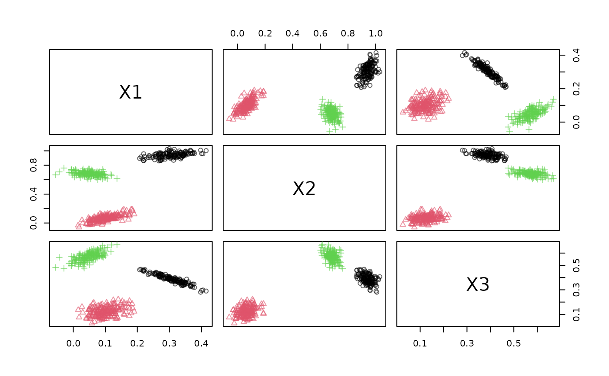

Reads from a web service that publishes an operation called
get_points which takes a parameter n and returns n data points in CSV or json
format. The request is
retried with httr::RETRY() if it fails the first time.
Arguments
- url
endpoint URI address in the format
http://host:port/<optional_path>.- verbose
logical; display connection information.
- ...
further arguments are passed on to
httr::RETRY(). Passhttr::verbose()as parameterconfigto get detailed connection info.
Value
A stream::DSD object.
See also
Other WebService:
DSC_WebService(),
publish_DSC_via_WebService(),
publish_DSD_via_WebService()
Other dsd:
DSD_ReadSocket(),
publish_DSD_via_Socket(),
publish_DSD_via_WebService()
Examples
# find a free port
port <- httpuv::randomPort()
port
#> [1] 30037
# create a background DSD process sending data to the port
rp1 <- publish_DSD_via_WebService("DSD_Gaussians(k = 3, d = 3)", port = port)
## use json for the transport layer instead of csv
# rp1 <- publish_DSD_via_WebService("DSD_Gaussians(k = 3, d = 3)",
# port = port, serialize = "json")
rp1
#> PROCESS 'R', running, pid 7326.
# create a DSD that connects to the web service
dsd <- DSD_ReadWebService(paste0("http://localhost", ":", port))
dsd
#> Web Service Data Stream: Gaussian Mixture (d = 3, k = 3)
#> Served from: http://localhost:30037
#> Class: DSD_ReadWebService, DSD_R, DSD
get_points(dsd, n = 10)
#> # A tibble: 10 × 4
#> X1 X2 X3 .class
#> <dbl> <dbl> <dbl> <dbl>
#> 1 0.0277 -0.0106 0.0584 2
#> 2 0.129 0.0793 0.0704 2
#> 3 0.126 0.0894 0.170 2
#> 4 0.00667 0.706 0.560 3
#> 5 0.0446 0.674 0.603 3
#> 6 0.415 0.942 0.280 1
#> 7 0.243 0.925 0.416 1
#> 8 0.325 0.915 0.382 1
#> 9 0.216 0.902 0.471 1
#> 10 0.0977 0.0465 0.152 2
plot(dsd)

# end the DSD process. Note: that closing the connection above
# may already kill the process.
rp1$kill()
#> [1] TRUE
rp1
#> PROCESS 'R', finished.